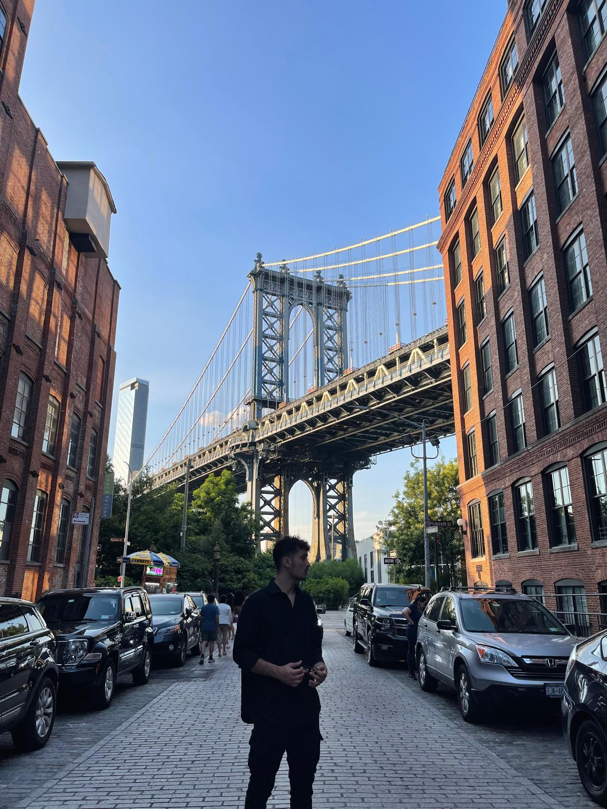
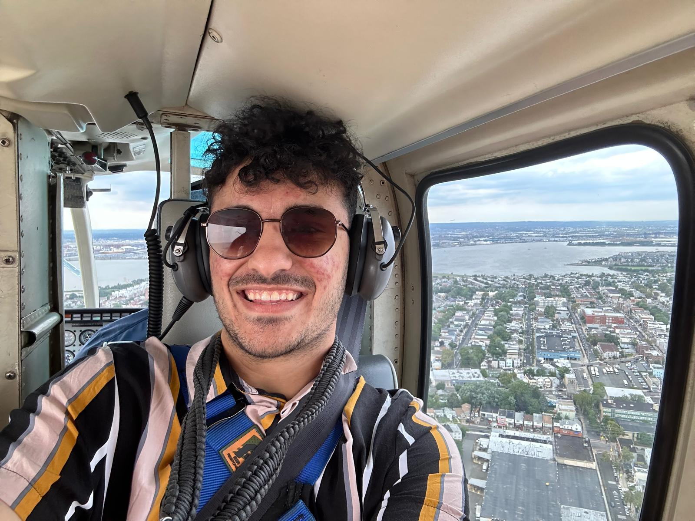
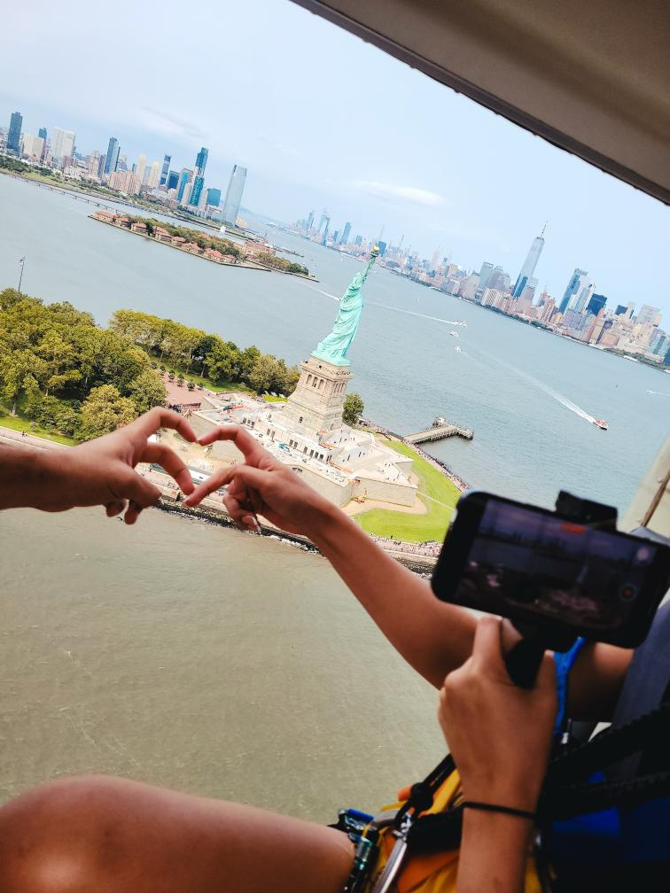

From Niagara to NYC
Arriving in Brooklyn
After our unforgettable detour to Niagara Falls, it was time to continue our journey to the main destination — New York City. We finally arrived at our hotel in Brooklyn after a long drive and went out for a short walk where we caught a glimpse of the Statue of Liberty. It was stunning!
Thanks to a random social media ad, we booked a helicopter tour for the next day — something I had never done before. I was excited not just about flying, but about seeing the Statue of Liberty from above. That night, we took some photos at the Brooklyn Bridge and had dinner at a nearby Mediterranean restaurant. The food reminded me of home and made me so happy.
The Helicopter Tour
The next morning, we headed to the helipad. After a quick safety training and shuttle ride, we saw our helicopter. The takeoff was thrilling, and even though the wind made it a bit scary, it was absolutely worth it. We met new people, exchanged Instagram handles, and created some of our favorite memories of the trip.
Exploring Manhattan and Times Square
We then moved into our Manhattan hotel and immediately went out to explore the city. First stop: a classic New York slice of pizza — and yes, it was as good as everyone says. The next day, we spent nearly the whole day in Times Square, where the energy was electric. People were dancing, singing, and just enjoying life. I was especially mesmerized by the towering digital billboards.
On our last day, we decided to stretch our route to make sure we could see the ocean before heading back. Standing at the shore, watching the waves, I felt a real connection to this city. In just four days, New York gave us memories that will last a lifetime — maybe that's what they mean by its magic.